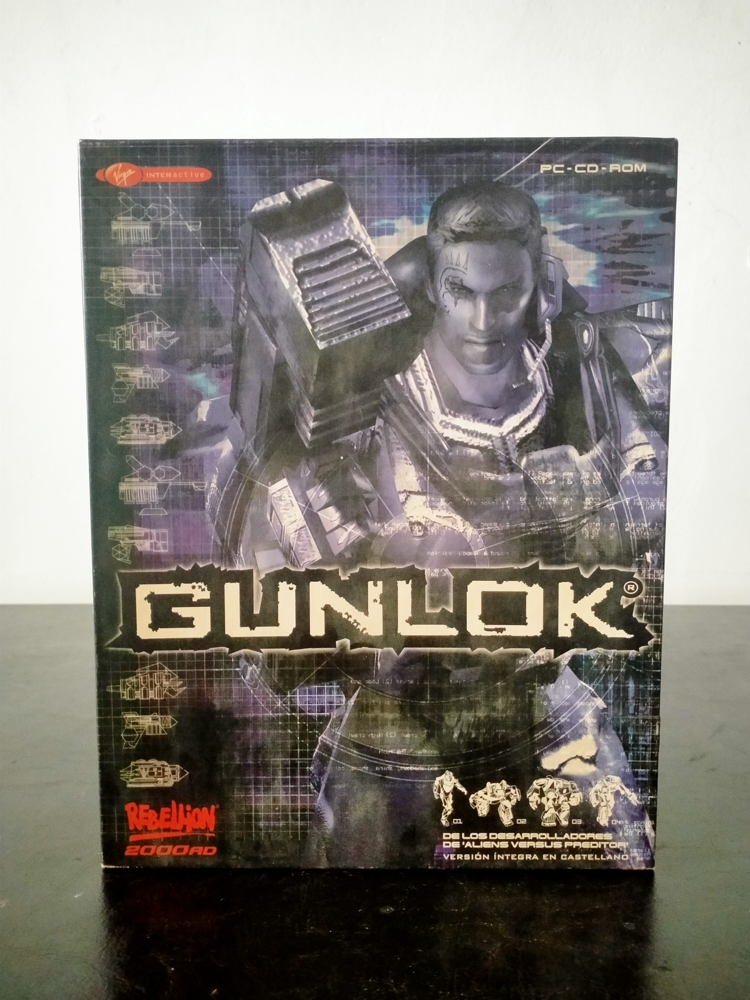

Ficha #000000
Gunlok
Gunlok (2000) es un título híbrido poco común dentro del panorama del PC de finales de los 90, desarrollado por Rebellion Developments, estudio también responsable de Alien vs Predator. El juego propone una combinación de acción en tercera persona y estrategia táctica en tiempo real, ambientada en un futuro donde corporaciones dominan la Tierra mediante ejércitos de robots. El jugador encarna a Gunlok, un soldado de élite equipado con armamento pesado y mejoras tecnológicas, liderando un escuadrón en misiones contra fuerzas mecanizadas. Una de sus principales particularidades es la posibilidad de alternar entre control directo del personaje y gestión táctica del equipo, lo que lo sitúa en una zona intermedia entre shooter y RTS. A nivel técnico, el juego destacaba por su uso de gráficos 3D acelerados y compatibilidad con tecnologías de la época como 3dfx, además de incorporar efectos avanzados de partículas e iluminación. Aunque no alcanzó gran popularidad comercial, Gunlok es un ejemplo interesante de experimentación en el diseño de géneros durante una época de transición tecnológica. Esta edición Big Box distribuida por Virgin Interactive mantiene la estética futurista característica del título, con arte promocional que enfatiza el componente tecnológico y militar. Hoy es una pieza poco habitual en el coleccionismo, especialmente en versiones completas en castellano.
- Formato
- Big Box
- Plataforma
- Win95 Win98 WinMe Win2000
- Género
- Acción Estrategia Shooter Ciencia ficción
- Serie
- Big Box Todos
- Desarrollador
- Rebellion Developments
- Distribuidor
- Virgin Interactive
- EAN
- 5028571031488
Contenido de la edición
- Caja Big Box original
- CD-ROM del juego
- Manual de instrucciones
Preservación
- Protección
- Verificación de CD
- Formato recomendado
- BIN/CUE
- Jugable en virtualización
- Sí
Requiere el CD original para su ejecución. Preservable mediante imagen de disco y uso de parche No-CD.